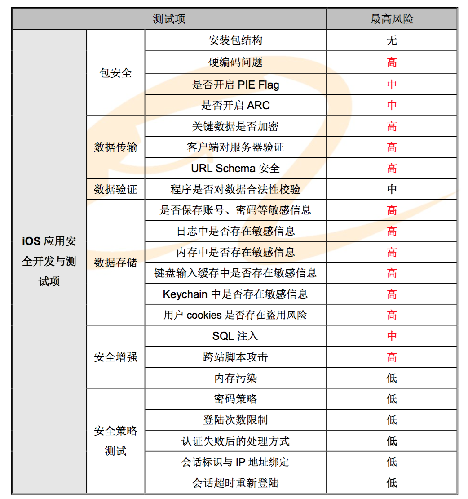

博文
个人理解
- 保密性，消息是加密的，内容没有泄露，可以用对称加密算法进行加解密，如AES256。
- 完整性，消息是完整的，内容没有被篡改，对消息做哈希得到摘要，作为消息的签名。哈希算法有SHA256等，MD5、SHA1已经不太安全，尽量用SHA256等相对安全的算法。
- 真实性，消息是可靠的，内容来自受信的来源，验证来源的数字证书是否可靠。
app安全

1.1 iOS真机环境
1.1.1 越狱后的 iphone
由于 iOS 缺乏模拟器测试环境,开发环境下的模拟器不支持自定义安装 ipa 进行测试调试的 功能,因此需 iphone 真机环境进行测试。由于测试所涉及的文件操作、应用调试等功能等权限被 官方出于安全考虑进行了限制,因此需对 iphone 进行越狱,获取 root 权限。
1.2 安全测试工具
部分工具下载地址请前往淘云盘下载 http://yunpan.alibaba-inc.com/share/link/2G5kEe73iM。
1.2.1 class-dump-z
一个跨平台的 Objective-C 接口提取器,用于分析 iPhoneOS 可执行文件中私有的 API。需 通过 Cydia 安装。
1.2.2 darwin cc tools (otools) 一个开源的苹果程序编译和连接器。需通过 Cydia 安装。
1.2.3 HTTP代理抓包工具(Fiddler)
1.2.4 Plist文件查看器(plistEditor) 请前往“文件检查”下载该软件。
1.2.5 iOS内存修改工具(iGameGuard) 请前往“内存检查”下载该软件。
1.2.6 内购破解工具(LocalIAPStore、iAPFree) 请前往“文件检查”下载该工具。安装后即默认启用。
1.2.7 keychain-dumper
该工具可以读取已越狱 IOS 设备中的 keychain。需通过 Cydia 安装。
1.2.8 Link Identity Editor (ldid)
该工具可以协助测试人员修改 Mach-O 二进制文件的签名信息。需通过 Cydia 安装。
1.2.9 OpenSSH
OpenSSH 是 Linux 下常用的服务,装上后设备可充当 SSH 服务端。需通过 Cydia 安装。
1.2.10 Snoop-it
IOS APP 安全评估工具。可对 APP 进行静态、动态分析。需通过 Cydia 安装。